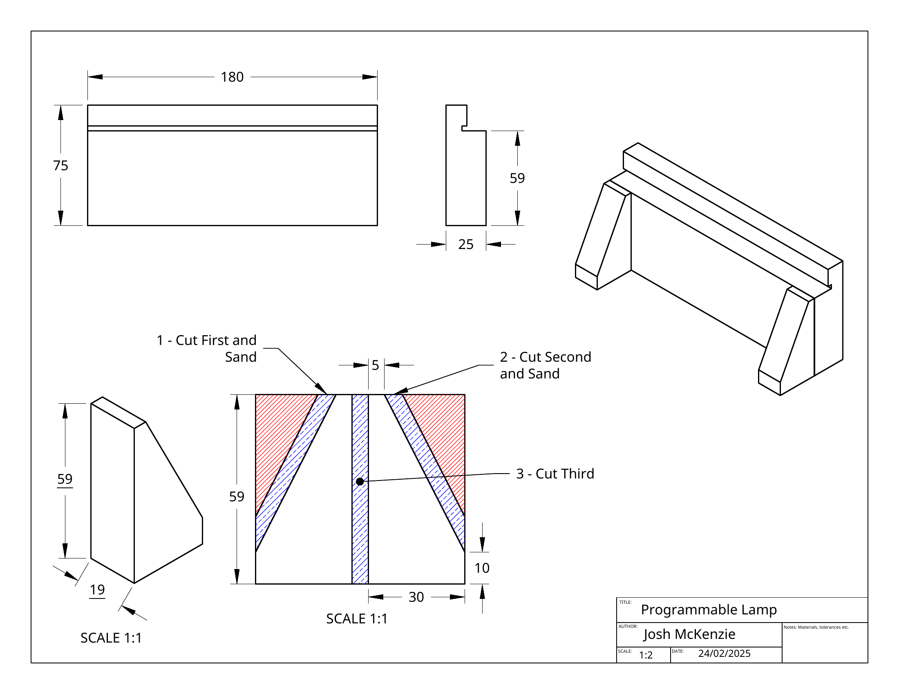

1. Read and inspect
Use the supplied sources, project plan and current Stage 4 Technology ideas to build accurate understanding.
Stage 4 Technology guided course
Investigate, design and communicate a timber-and-acrylic light that brings together materials, an Arduino Uno, an RGB LED strip and code.
 Open larger
Open larger The project
Investigate, design and communicate a timber-and-acrylic light that brings together materials, an Arduino Uno, an RGB LED strip and code.
How the course works
Every two-week module has three substantive theory sections, source-grounded checks and written evidence.
Use the supplied sources, project plan and current Stage 4 Technology ideas to build accurate understanding.
Use the knowledge checks and feedback to correct misconceptions.
Connect the theory to your own observations and decisions in the project.
Use Print / Save PDF and the folio backup to keep evidence outside the webpage.
Student evidence. Written evidence autosaves on this browser and device. Browser storage is a working copy, not cloud submission.
Source boundary: the authorised folder does not supply a complete practical sequence for Weeks 4–10, circuit or machine settings, formal assessment details or final class criteria. Those remain Teacher to confirm.
Ten-week guided pathway
The pathway uses only answerable theory and evidence from authorised sources and the current NESA syllabus. Teacher-issued instructions control the practical order and exact workshop action.
Define a programmable light, recognise project tools and materials, manage workshop risk and read the supplied drawing.
Open module →Work accurately with units and scale, investigate suitable images and communicate a source-aware design direction.
Open module →Compare timber sources, explain how materials and components contribute, and plan evidence without inventing a job sheet.
Open module →Use algorithms, sequence, variables, loops and conditionals to reason about a programmable system before teacher-directed implementation.
Open module →Test against confirmed criteria, explain decisions, evaluate sustainability and assemble an honest project evidence record.
Open module →Collect plan-reading, design, production, coding, testing and evaluation evidence as the project develops.
Open folio →Core project resource

Open largerRead the title block, scale labels, dimension lines and three cut-order labels before deciding what the drawing communicates. Use the full PDF for detail rather than measuring this preview.
Student evidence
The folio prompts students to collect authentic notes, captions, source checkpoints and optional photos. Browser autosave is device-local preparation, not cloud submission.
Every card asks for evidence students can actually observe, explain or confirm. Missing teacher-controlled facts stay clearly marked.
Use Print / Save PDF and download a JSON backup before changing devices or clearing browser data.
Open the folio →Syllabus outcomes
This is the governing NSW syllabus authority, implemented from 2026. The eight outcomes provide the current mapping frame; which website or folio evidence is formally assessed remains Teacher to confirm.
Authorised source library
These are the relevant activities, drawing, theory and quiz dependencies from the authorised folder. Teacher direction controls completion, machine permission, Classroom destinations and every practical action.
The 80 mm × 50 mm maximum belongs only to the key-tag practice.
Weeks 04-10 contain no supplied practical program. The website uses the theory for learning and evidence; it does not fabricate a production, electronics or assessment sequence.
Teacher resources
Open the teacher-developed, source-mapped program for local review. It is not NESA approved and retains every unresolved local, practical and assessment decision as Teacher to confirm.
Open teacher program & scope and sequence →